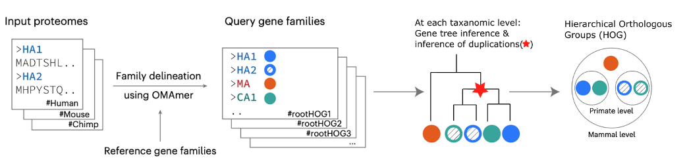
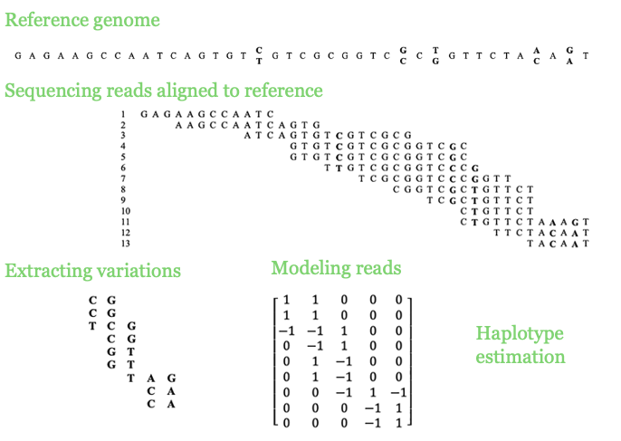
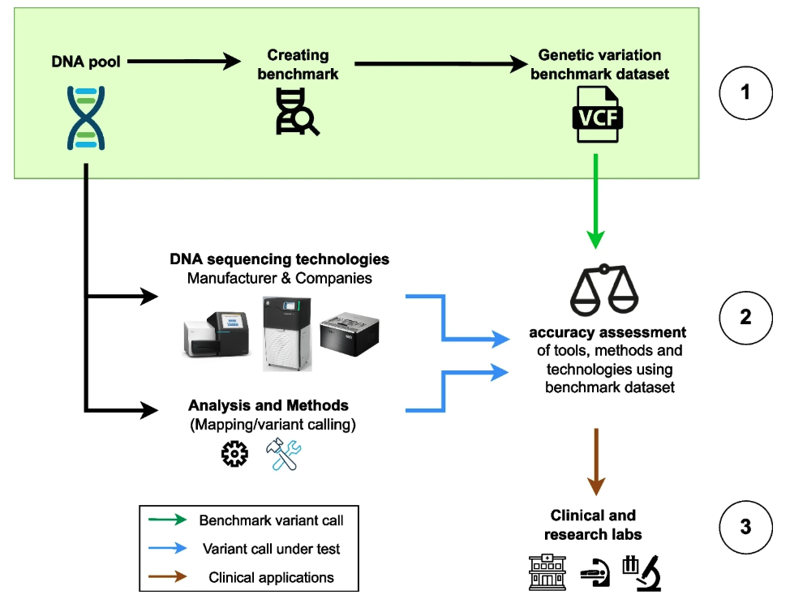

|
Past Research Studies
Orthology and phylogeny inference at scale, along with their applications, are my main research interests. I have developed methods and written software in the field of comparative genomics, aiming to enable evolutionary analysis at the scale of the Tree of Life. I contributed to the development of Read2Tree, a fast and accurate method for inferring phylogenies from sequencing reads. I am also the first author of FastOMA, a tool for accurately identifying orthologous genes by distinguishing them from paralogs. This tool makes a significant impact in orthology prediction and addressing the challenges of growing large- scale genomic data.

Haplotype assembly was the main focus of my PhD, leading to five first-author and two second-author publications. I have developed software for estimating haplotype blocks from single nucleotide variants (SNVs) called from DNA sequencing reads. In one project, I benefited from low-rank matrix recovery in haplotype estimation and applied it to human sequencing data. In another project, I studied hexaploid sweet potato (Ipomoea batatas) using a 10X Genomics linked-read dataset, which resulted in long and accurate haplotypes. A longstanding problem in the field was understanding the limitations of the Minimum Error Correction (MEC) approach in haplotype assembly, for which I developed a solid framework.

Genomic variant benchmark datasets are crucial for assessing the performance of sequencing technologies and analytical methods; however, their development involves multiple sequencing technologies, different variant calling tools, and laborious manual curation. In one study, I reviewed available benchmark datasets and their utility, with a focus on genes of medical relevance. In another study, in collaboration with the Genome in a Bottle team, I co-led an effort to develop a genomic resource by defining various challenging genomic contexts used to investigate the strengths and weaknesses of variant callers, which is published in Nature Communication.

Supervision and mentorship
Graduate students
- Fahimeh Palizban. Inferring copy number variation with cell-free DNA data, University of Lausanne, 2024.
- Arung Maurya. Reconstructing cancer phylogenies with Spatial Transcriptomics, University of Lausanne, 2023.
- Sara Lamei. Analysing biosynthetic pathway of terpenoids in fenugreek using RNA-seq data. Tarbiat Modares University, 2022.
- Rajarshi Mondal. T2T gene annotations of the Major Histocompatibility Complex. Pondicherry University, 2022.
- Samuel Moix. Detecting whole genome duplication using hierarchical orthologous groups, University of Lausanne, 2021. (Now PhD student at the University of Lausanne, Switzerland.)
- Mathijs van Kooten. Creating an ensemble method combining haplotype estimates. Wageningen university, 2019. (Now at Twintos, the Netherlands).
Summer interns
- Ali Yazdizadeh. Importance of phylogenetic rooting for orthology inference, 2022. (Incoming PhD student in Computational Biology, USA.)
- Borbala Banfalvi, Claire Wang, and Petros Liakopoulos. Natural Language Question Answering over Knowledge Graphs, 2022.
- Alina Nicheperovich. Orthology guided model organism selection, 2021. (Now DPhil Candidate at the University of Oxford, UK.)
|